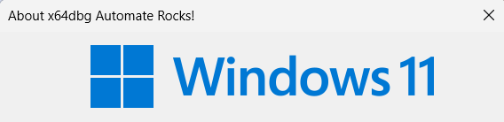

x64dbg Automate Quickstart
An automation session can be launched with four steps:
One: Instantiate X64DbgClient and orient it against your installation
client = X64DbgClient(x64dbg_path="C:\x64dbg\release\x64\x64dbg.exe")
Two: Start a new debug session or attach to an existing one
client.start_session(r'my_cool_program.exe')
Three: Act!
client.set_breakpoint('GetModuleHandleA')
client.go()
See Client Reference sections for full capabilities.
Four: Clean up
client.deattach_session()
Example: Hello World
"""
Example: Hello x64dbg Automate (64 bit)
"""
import sys
from x64dbg_automate import X64DbgClient
if len(sys.argv) != 2:
print("Usage: python hello64.py <x64dbg_path>")
quit(1)
print('[+] Creating a new x64dbg Automate session')
client = X64DbgClient(x64dbg_path=sys.argv[1])
client.start_session(r'c:\Windows\system32\winver.exe')
print('[+] Allocating memory in the debugee and writing a string to it')
mem = client.virt_alloc()
client.write_memory(mem, 'x64dbg Automate Rocks!'.encode('utf-16le'))
print('[+] Breakpointing ShellAboutW and running until we hit it')
client.set_breakpoint('ShellAboutW', singleshoot=True)
client.go() # Entrypoint breakpoint
client.wait_until_stopped()
client.go() # ShellAboutW
client.wait_until_stopped()
print('[+] Replacing the ShellAboutW App name with our string')
client.set_reg('rdx', mem)
client.go()
print('[+] Bye bye! Go check out the title bar of the winver window! 🥳')
client.deattach_session()
Output
[+] Creating a new x64dbg Automate session
[+] Allocating memory in the debugee and writing a string to it
[+] Breakpointing ShellAboutW and running until we hit it
[+] Replacing the ShellAboutW App name with our string
[+] Bye bye! Go check out the title bar of the winver window! 🥳

More Examples
More examples of x64dbg Automate's capabilities can be seen in: https://github.com/dariushoule/x64dbg-automate-pyclient/tree/main/examples